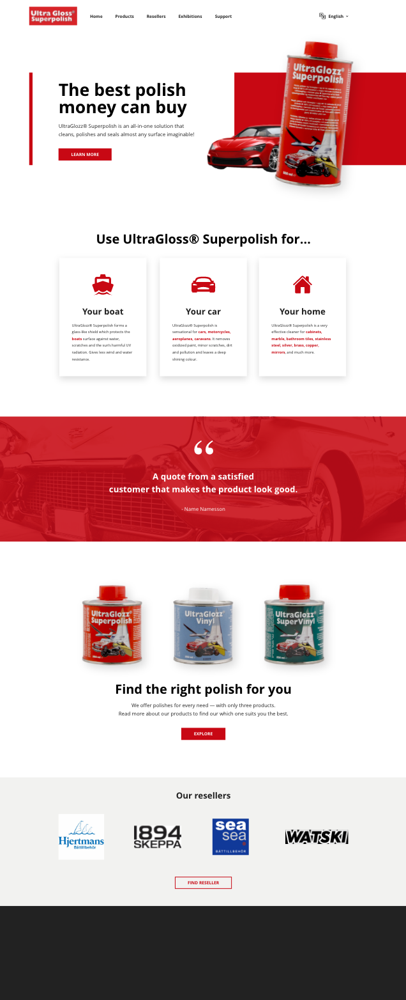

Background
Ultraglozz is a danish company producing multi-use polishes and boat accessories. They are selling their products via resellers and on exhibitions, and not on their website. The purpose of their website is give information about their products and upcoming exhibitions, as well as a way for people to contact them. Visit their website here.
This project was done as a part of a course assignment and UltraGlozz has not been a part of the process. However, they have approved me using some of their material in this portfolio.
The problem
The current web design has several design issues that flaws the experience and overall usability of the website.

My solution
I created simple wireframes in Adobe XD for desktop and mobile, and a mock-up of the desktop version.
The process
Far far away, behind the word mountains, far from the countries Vokalia and Consonantia, there live the blind texts. Separated they live in Bookmarksgrove right at the coast of the Semantics, a large language ocean. A small river named Duden flows by their place and supplies it with the necessary regelialia.
Conclusion
Far far away, behind the word mountains, far from the countries Vokalia and Consonantia, there live the blind texts. Separated they live in Bookmarksgrove right at the coast of the Semantics, a large language ocean. A small river named Duden flows by their place and supplies it with the necessary regelialia.